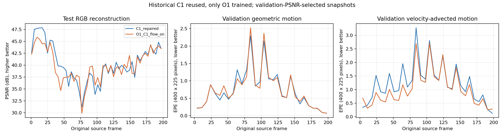

关闭组直接复用，未重训；每个画面左GT、右Render。
C1_repaired | O1_C1_flow_on |
结论：速度推进EPE降低16.43%，验证PSNR下降0.3705 dB；未达到预先综合收益门槛。
完整评估报告 · 历史C1最终50k视频 · O1最终50k视频 · 历史C1压缩包 · O1压缩包

{
"historical_control_reused": true,
"cancelled_O0_excluded": true,
"validation": {
"C1_repaired": {
"PSNR": 39.68339277903239,
"SSIM": 0.9942728737990062,
"LPIPS": 0.011020102305337787,
"MS-SSIM": 0.9961262146631876
},
"O1_C1_flow_on": {
"PSNR": 39.312936528523764,
"SSIM": 0.9941760738690694,
"LPIPS": 0.011160459377182026,
"MS-SSIM": 0.9961046854654948
}
},
"test": {
"C1_repaired": {
"ours_50000": {
"SSIM": 0.9946761131286621,
"PSNR": 40.372127532958984,
"LPIPS": 0.010437515564262867,
"MS-SSIM": 0.9965463280677795
},
"ours_best": {
"SSIM": 0.9946563839912415,
"PSNR": 40.33440399169922,
"LPIPS": 0.010418016463518143,
"MS-SSIM": 0.9965338110923767
},
"ours_metric_lpips": {
"SSIM": 0.9946563839912415,
"PSNR": 40.33440399169922,
"LPIPS": 0.010418016463518143,
"MS-SSIM": 0.9965338110923767
},
"ours_metric_ms_ssim": {
"SSIM": 0.9946563839912415,
"PSNR": 40.33440399169922,
"LPIPS": 0.010418016463518143,
"MS-SSIM": 0.9965338110923767
},
"ours_metric_ssim": {
"SSIM": 0.9946563839912415,
"PSNR": 40.33440399169922,
"LPIPS": 0.010418016463518143,
"MS-SSIM": 0.9965338110923767
}
},
"O1_C1_flow_on": {
"ours_50000": {
"SSIM": 0.9946059584617615,
"PSNR": 39.90061950683594,
"LPIPS": 0.010396149940788746,
"MS-SSIM": 0.9965742230415344
},
"ours_best": {
"SSIM": 0.9946059584617615,
"PSNR": 39.90061950683594,
"LPIPS": 0.010396149940788746,
"MS-SSIM": 0.9965742230415344
}
}
},
"motion": {
"C1_repaired": {
"model_coverage": 0.9999840418497722,
"zero_flow_EPE_px": 1.4555232589443525,
"geometric_EPE_px": 0.7423107388118902,
"geometric_normalized_L1": 0.00156636252553047,
"velocity_EPE_px": 1.2262642800807952,
"velocity_normalized_L1": 0.0026641267594338085,
"camera_only_static_EPE_px": 1.2214969212810198,
"camera_only_static_normalized_L1": 0.0026606885396176947
},
"O1_C1_flow_on": {
"model_coverage": 0.9999374290307362,
"zero_flow_EPE_px": 1.4555232589443525,
"geometric_EPE_px": 0.7485556264718374,
"geometric_normalized_L1": 0.0015792325847238922,
"velocity_EPE_px": 1.0248173425594966,
"velocity_normalized_L1": 0.0022675224366442612,
"camera_only_static_EPE_px": 1.215223483244578,
"camera_only_static_normalized_L1": 0.002648679854852768
}
},
"deltas_O1_minus_historical_C1": {
"validation_PSNR_dB": -0.3704562505086244,
"validation_LPIPS_relative": 0.012736458152140306,
"geometry_EPE_relative": 0.008412767502114393,
"velocity_EPE_relative": -0.16427693507310337
},
"prospective_criteria": {
"image_PSNR": false,
"image_LPIPS": true,
"geometry_motion": true,
"velocity_motion": true
},
"composite_benefit": false,
"limitations": [
"historical control reuse, not a fresh simultaneous two-run comparison",
"single scene and seed",
"GPU nondeterminism",
"historical test exposure"
]
}